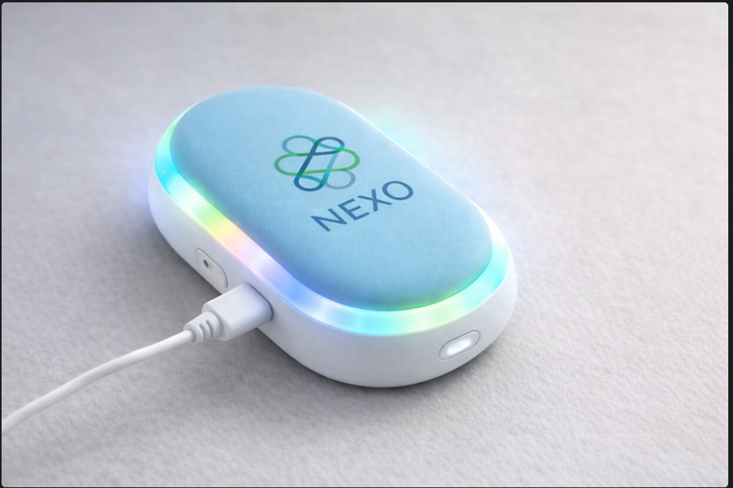

Tecnología enfocada en el bienestar emocional

El dispositivo NEXO es una solución innovadora diseñada para ayudar a reducir el estrés y la ansiedad en entornos académicos y laborales. Su diseño ergonómico y portátil permite utilizarlo en cualquier momento.
El dispositivo NEXO se utiliza de forma sencilla, integrándose en la rutina diaria del usuario para generar estímulos que promueven la calma y el enfoque.